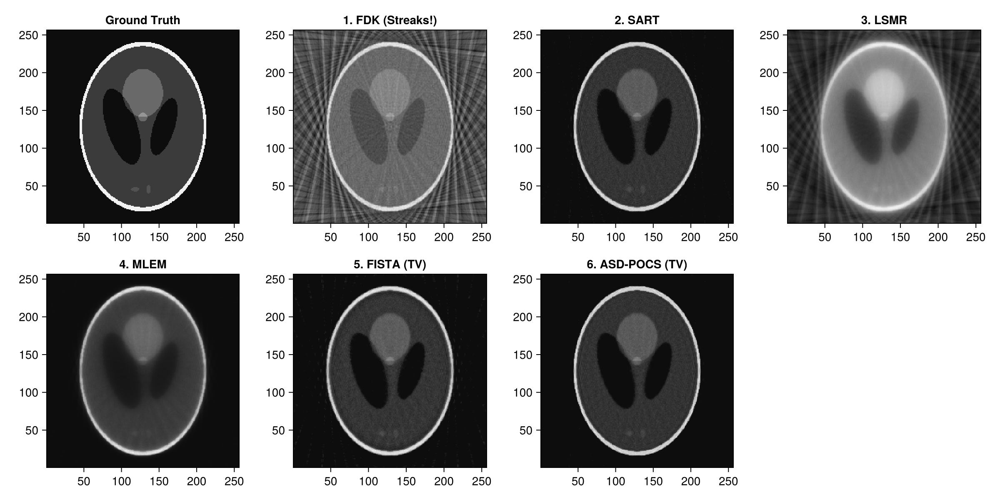
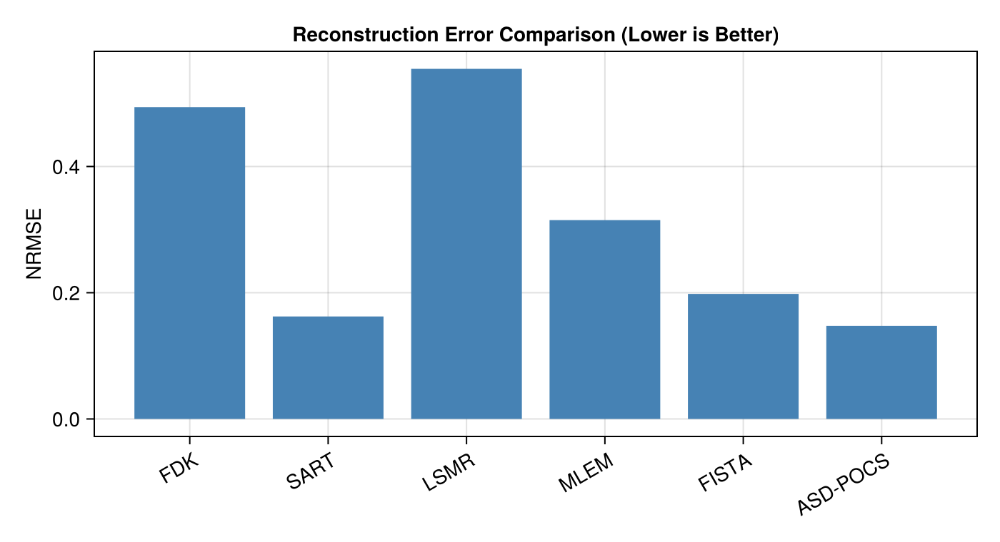

Comparison of Iterative CT Reconstruction Algorithms (Sparse-View CT)
In low-dose and rapid CT scanning, the number of acquired projection angles is often severely constrained (e.g. only 30 angles). Under these conditions:
- Direct methods (FDK) produce severe streak artifacts due to angular under-sampling.
- Unregularized iterative methods (SART, LSMR) reduce streaks but amplify high-frequency noise.
- Statistical methods (MLEM) model Poisson photon statistics.
- Total Variation regularized methods (FISTA, ASD-POCS) leverage compressed sensing principles to reconstruct clean, sharp images from sparse projections.
This notebook evaluates and compares 6 distinct solvers on identical sparse-view data:
fdk(Analytical baseline)sart(Algebraic reconstruction)lsmr(Krylov subspace least squares)mlem(Maximum Likelihood Expectation Maximization)fista(Total Variation proximal gradient)asd_pocs(Adaptive Steepest Descent POCS)
Relevant Functions Used
Tigre.shepp_logan_3d: Generates analytical ground truth phantom.Tigre.fdk,Tigre.sart,Tigre.lsmr,Tigre.mlem,Tigre.fista,Tigre.asd_pocs.
Prerequisites
This tutorial uses Makie (recommended backend: CairoMakie) for visualization. If CairoMakie is not installed in your environment, add it by running using Pkg; Pkg.add("CairoMakie").
using LinearAlgebra
using CairoMakie
using Tigre1. Phantom and Sparse-View Geometry Setup
We simulate a sparse-view acquisition with only 45 projection angles over $360^\circ$.
N = 256
vol_3d_full = shepp_logan_3d(N; phantom_type = :yu_ye_wang)
phantom_2d = vol_3d_full[:, :, 3 * N ÷ 8]
vol_phantom = reshape(phantom_2d, N, N, 1)
# Only 45 projection angles!
n_sparse_angles = 45
angles = Float32.(range(0, 2pi, length=n_sparse_angles))
n_det = 384
geo = Geometry(
mode = :cone,
angles = angles,
nVoxel = (N, N, 1),
sVoxel = (Float32(N), Float32(N), 1.0f0),
nDetector = (n_det, 1),
sDetector = (Float32(n_det), 1.0f0),
DSO = 1000.0f0,
DSD = 1500.0f0,
)
println("Simulating sparse-view CT with $(n_sparse_angles) angles")
projections = Ax(vol_phantom, geo);Simulating sparse-view CT with 45 angles2. Running the 6 Solvers
# =============================================================================
# Estimation of FISTA Lipschitz Hyperparameter (`hyper`)
#
# FISTA (Fast Iterative Shrinkage-Thresholding Algorithm) relies on proximal gradient descent.
# Its gradient step size is proportional to 1 / hyper, where hyper represents the Lipschitz
# constant L ≈ ||Aᵀ A||₂ (the spectral radius of the forward-backward projection operator).
#
# If `hyper` is left to the default fallback value, the gradient step size can be drastically
# mismatched (e.g. orders of magnitude too conservative), leading to poor reconstruction quality
# and near-zero convergence.
#
# We explicitly estimate `fista_hyper` beforehand using the SVD power method via `estimate_hyper(geo)`.
# Storing it in an explicit variable before calling `fista` makes the parameter calibration step
# transparent and easily verifiable, emphasizing the critical importance of proper operator norm scaling.
# =============================================================================
fista_hyper = estimate_hyper(geo)
println("Estimated FISTA Lipschitz hyperparameter: ", fista_hyper)
Estimated FISTA Lipschitz hyperparameter: 79802.766println("1. Running FDK...")
rec_fdk = dropdims(fdk(projections, geo; filter = :hann), dims=3)
println("2. Running SART (10 iterations)...")
rec_sart = dropdims(sart(projections, geo, 10; lambda = 1.0f0), dims=3)
println("3. Running LSMR (15 iterations)...")
rec_lsmr = dropdims(lsmr(projections, geo, 15), dims=3)
println("4. Running MLEM (15 iterations)...")
rec_mlem = dropdims(mlem(projections, geo, 15), dims=3)
println("5. Running FISTA with TV (40 iterations)...")
rec_fista = dropdims(fista(projections, geo, 40; hyper = fista_hyper, tviter = 10, tvlambda = 0.05f0), dims=3)
println("6. Running ASD-POCS with TV (15 iterations)...")
rec_asdpocs = dropdims(asd_pocs(projections, geo, 15; tviter = 15, alpha = 0.002f0), dims=3)
println("All reconstructions completed successfully!")
1. Running FDK...
2. Running SART (10 iterations)...
3. Running LSMR (15 iterations)...
4. Running MLEM (15 iterations)...
5. Running FISTA with TV (40 iterations)...
6. Running ASD-POCS with TV (15 iterations)...
All reconstructions completed successfully!3. Visual Comparison Matrix
# Plot all reconstructions side-by-side
titles = [
"Ground Truth", "1. FDK (Streaks!)", "2. SART", "3. LSMR",
"4. MLEM", "5. FISTA (TV)", "6. ASD-POCS (TV)"
]
imgs = [phantom_2d, rec_fdk, rec_sart, rec_lsmr, rec_mlem, rec_fista, rec_asdpocs]
fig = Figure(size = (1200, 600))
for (idx, (t, img)) in enumerate(zip(titles, imgs))
row = (idx - 1) ÷ 4 + 1
col = (idx - 1) % 4 + 1
ax = Axis(fig[row, col], title = t, aspect = DataAspect())
heatmap!(ax, img, colormap = :grays)
end
fig
4. Quantitative Metrics: Normalized RMSE
We calculate the Normalized Root Mean Squared Error (NRMSE) against the ground truth phantom: $\text{NRMSE}(x, x^*) = \frac{\|x - x^*\|_2}{\|x^*\|_2}$
function nrmse(x, x_true)
return norm(vec(x) .- vec(x_true)) / norm(vec(x_true))
end
metrics = [
("FDK", nrmse(rec_fdk, phantom_2d)),
("SART", nrmse(rec_sart, phantom_2d)),
("LSMR", nrmse(rec_lsmr, phantom_2d)),
("MLEM", nrmse(rec_mlem, phantom_2d)),
("FISTA", nrmse(rec_fista, phantom_2d)),
("ASD-POCS", nrmse(rec_asdpocs, phantom_2d)),
]
println("--- Quantitative Accuracy (Normalized RMSE) ---")
for (name, val) in metrics
println(rpad(name, 12), ": ", round(val, digits=4))
end
names = [m[1] for m in metrics]
vals = [Float32(m[2]) for m in metrics]
fig = Figure(size = (700, 380))
ax = Axis(fig[1, 1], title = "Reconstruction Error Comparison (Lower is Better)",
ylabel = "NRMSE", xticks = (1:length(names), names),
xticklabelrotation = Float32(pi/6))
barplot!(ax, 1:length(names), vals, color = :steelblue)
fig
--- Quantitative Accuracy (Normalized RMSE) ---
FDK : 0.494
SART : 0.1624
LSMR : 0.5547
MLEM : 0.315
FISTA : 0.1981
ASD-POCS : 0.1475
Summary
- FDK: Suffers from heavy view-aliasing streaks when projection count is low ($N_\theta = 30$).
- SART & LSMR: Improve data fidelity and reduce global streaks, but residual noise remains.
- FISTA & ASD-POCS: Total Variation regularizers suppress streak artifacts while recovering clean flat regions and sharp structural edges.